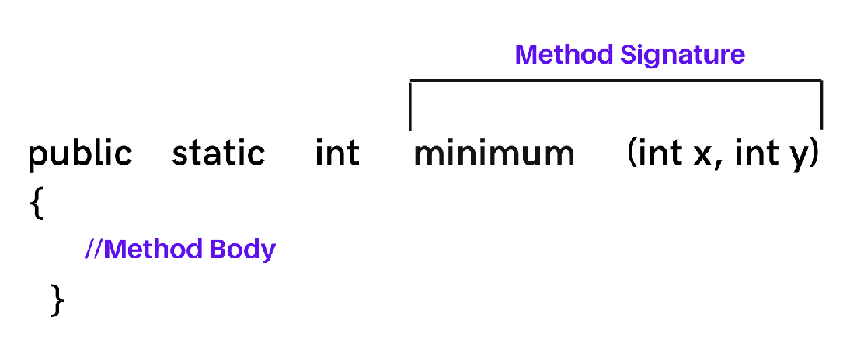

⚙️ Sobrecarga de Métodos y Paso por Valor vs Referencia en Java
En el punto 2.6 del curso vimos una los métodos en Java, qué son, cómo definirlos y sus partes. En los siguientes puntos vamos estudiar conceptos relacionados con los métodos.
🔤 ¿Qué es la sobrecarga de métodos?
La sobrecarga de métodos (method overloading) consiste en definir varios métodos con el mismo nombre pero distintos parámetros dentro de una misma clase. El compilador decide cuál ejecutar dependiendo de la firma del método.
La firma de un método en Java es la combinación del nombre del método y la lista de parámetros en su orden y tipo.

En el siguiente ejemplo:
void saludar(String nombre)
void saludar(int veces)
void saludar(String nombre, int veces)
Sus firmas son:
- saludar(String)
- saludar(int)
- saludar(String, int)
Son válidas porque todas son distintas.
📐 Reglas de la sobrecarga
- Debe cambiar número, tipo u orden de parámetros.
- NO puede diferenciarse solo por el tipo de retorno.
- Puede tener diferentes modificadores de acceso.
- Puede lanzar excepciones distintas.
💻 Ejemplo actualizado (Java 21)
public class Calculadora {
public int sumar(int a, int b) { return a + b; }
public double sumar(int x, int y) { return a + b; } // 🛑 Ejemplo inválido misma firma: sumar(int, int)
public double sumar(double a, double b) { return a + b; }
public int sumar(int a, int b, int c) { return a + b + c; }
}
💡 Ventajas de la sobrecarga
- ✅ Mejora la legibilidad: mismo método, distintos usos.
- ✅ Reduce nombres innecesarios.
- ✅ Permite usar constructores sobrecargados para inicializar objetos con datos opcionales.
🧱 Ejemplo con constructores sobrecargados
public class Persona {
private String nombre;
private int edad;
public Persona() { this("Sin nombre", 0); }
public Persona(String nombre) { this(nombre, 0); }
public Persona(String nombre, int edad) {
this.nombre = nombre;
this.edad = edad;
}
}
🧭 ¿Cómo decide Java qué método elegir?
Cuando llamamos a un método sobrecargado, Java utiliza reglas de resolución:
- 🎯 Coincidencia exacta de tipos.
- 🔁 Ampliación de tipos (widening)
int → long → float → double - 🧱 Autoboxing
int ↔ Integer,double ↔ Double - 📦 Varargs como última opción.
🔍 Ejemplo
public void test(int x) {
System.out.println("int");
}
public void test(Integer x) {
System.out.println("Integer");
}
public void test(int... x) {
System.out.println("varargs");
}
test(5)llama al métodotest(int)--> Coincidencia exactabyte b = 9; test(b)llama al métodotest(int)--> Wideningtest(Integer.valueOf(5))llama al de tipoInteger--> Autoboxingtest()llama al de varargs
🔁 Paso por valor y referencias en Java
Java siempre usa paso por valor (pass by value) cuando llamamos a un método como ya hemos visto.
Esto significa que:
🔹 Lo que Java pasa al método es una COPIA del valor original, nunca el original directamente.
!!! Warning Pero ojo:
- Si el valor es un tipo de dato primitivo, la copia es el número, boolean, etc.
- Si el valor es un objeto, la copia es la referencia que apunta al objeto.
🧮 1 Paso por valor con variables locales de tipos primitivos
Se pasa una copia del valor real.
void incrementar(int x) { //se pasa una copia del valor 5 y se asigna a x
x++;//se le suma 1 a x
}
int n = 5;
incrementar(n); // no se pasa n, se pasa una copia de su valor
System.out.println(n); // n sigue valiendo 5, imprime 5
📝 Explicación:
- n no cambia porque el método recibe una copia con valor 5.
- Cambia esa copia, no la variable original.
📦 2 Paso por valor con objetos (referencias)
Se pasa una copia de la referencia, no del objeto.
Por tanto, dentro del método podemos modificar el objeto al que apunta.
🧠 ¿Qué es una referencia en Java?
Una referencia es la dirección de memoria donde está guardado un objeto. 👉 Es un puntero que señala dónde está el objeto real.
// Definimos una clase sencilla con un solo atributo
public class Caja {
public int valor; //// atributo que guarda un número entero
}
public class MainCaja {
// Método que recibe una Caja y le suma 1 a su atributo 'valor'
public static void modificar(Caja c) {
// 'c' es una COPIA de la referencia a la Caja original
// Accedemos al objeto al que apunta y modificamos su campo 'valor'
c.valor++; // equivalente a: c.valor = c.valor + 1;
}
public static void main(String[] args) {
// Creamos una nueva instancia de Caja
Caja c = new Caja(); // aquí 'c' es una referencia a un objeto Caja en memoria
// Asignamos el valor 10 al atributo 'valor' de esa caja
c.valor = 10; // ahora dentro del objeto c, valor = 10
// Llamamos al método 'modificar' pasando la referencia 'c'
modificar(c);// se pasa una COPIA de la referencia, pero ambas apuntan al MISMO objeto
// Imprimimos el atributo 'valor' de la caja
System.out.println(c.valor); // imprime 11, porque dentro de 'sumar' se incrementó el valor
}
}
🔑 Idea clave para entender qué sucede:
- Java sigue siendo paso por valor: al método modificar se le pasa una copia de la referencia.
- Pero esa copia apunta al mismo objeto, así que cualquier cambio en c.valor modifica el objeto real que luego imprimimos.
🚫 PERO: no podemos reasignar la referencia original
Recuerda Java pasa una COPIA de la referencia, no la referencia original.
public class MainCaja {
//Se recibe una copia de la referencia del objeto c
public static void reset(Caja c) {
c = new Caja(); // solo cambia la copia de la referencia a una nueva
c.valor = 0; //le cambia el valor a esa nueva referencia
}
public static void main(String[] args) {
// Creamos una nueva instancia de Caja
Caja c = new Caja(); // aquí 'c' es una referencia a un objeto Caja en memoria
// Asignamos el valor 10 al atributo 'valor' de esa caja
c.valor = 10; // ahora dentro del objeto c, valor = 10
reset(c);//se pasa una COPIA de la referencia
// Imprimimos el atributo 'valor' de la caja
System.out.println(c.valor); // sigue siendo 10, NO 0
//Dentro del método puedes modificar el OBJETO,
//pero NO puedes cambiar la referencia original porque solo recibes una copia.
}
}
---
## 🧠 Buenas prácticas modernas (Java 17–21)
### ⚠️ Evitar sobrecarga excesiva
Si sobrecargas más de 4–5 métodos, puede volverse confuso. Considera usar **métodos estáticos auxiliares**, **constructores con builder**, o **Optional** para parámetros opcionales.
### 🧊 Usar registros (records) para objetos inmutables (los veremos más adelante)
```java
public record Punto(int x, int y) { }
🧷 Utilizar varargs con moderación
El compilador puede confundir sobrecargas con varargs.
🚨 ¿Qué pasa con la sobrecarga y varargs?
Java usa varargs como última opción cuando no hay coincidencia exacta.
void test(int x) { }
void test(int... x) { }
Llamada:
test(5); //👉 Llama a test(int) porque es coincidencia exacta.
Pero si hacemos:
test(); //👉 Llama a test(int...) porque el varargs permite cero argumentos.
🤓 ¿Por qué confunden a veces?
Porque un método con varargs puede aceptar muchos patrones diferentes:
imprimir(1);
imprimir(1, 2);
imprimir(1, 2, 3, 4, 5);
imprimir(); // también válido
Y si además tienes otros métodos sobrecargados, Java aplicará sus reglas de resolución de métodos, lo que puede resultar confuso.
🎯 Ejemplo de varargs + sobrecarga
public class EjemploVarargs {
// 1) Método normal con un solo parámetro
public static void saludar(String nombre) {
System.out.println("Hola, " + nombre + " 👋");
}
// 2) Método sobrecargado con VARARGS (puede recibir muchos nombres)
public static void saludar(String... nombres) {
System.out.println("Saludos a todos:");
for (String n : nombres) {
System.out.println(" - " + n);
}
}
public static void main(String[] args) {
saludar("Ana"); // 👉 Llama al método (1)
saludar("Ana", "Luis", "Marta"); // 👉 Llama al método (2)
saludar(); // 👉 Llama al método (2) con 0 nombres
}
}
🔍 ¿Qué está pasando aquí?
Cuando llamas a saludar("Ana"): Java ve dos candidatos:
- saludar(String nombre)
- saludar(String... nombres)
Elige el más específico, es decir, el que recibe un solo String, no el de varargs.
Cuando llamas a saludar("Ana", "Luis", "Marta"): Solo encaja el de String... nombres, así que elige ese.
Cuando llamas a saludar(): Solo encaja el de String... nombres (varargs admite 0 argumentos).
🧾 Resumen Final
- 🔁 La sobrecarga permite métodos con el mismo nombre y distintas firmas.
- 🎯 Java siempre pasa copias de los valores.
- 📦 Para objetos, la copia contiene la referencia, permitiendo modificar el interior del objeto.
- 🔒 No se puede reasignar la referencia original desde un método.
- 🧩 Arrays y colecciones también pueden ser modificados dentro del método.
- 🧮 Las reglas de resolución de métodos incluyen: coincidencia exacta, widening, autoboxing y varargs.